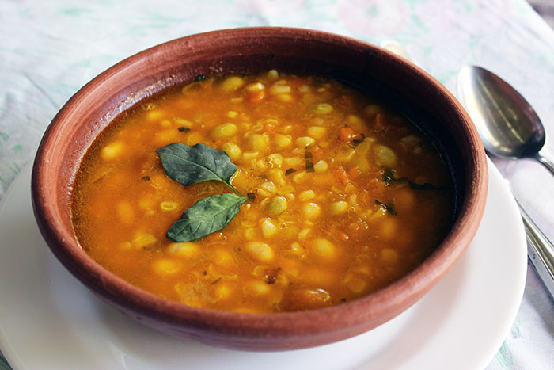

Porotos

Description
I would have loved having uploaded this recipe a long time ago, but I had to wait for my travel to Chile to make it and taste it
with the authentic flavors of this dish, that is so typical Chilean. This recipe uses a seasonal corn, available during the
Chilean summer, besides of the cranberry beans it requires. Here in the United States I can find a similar kind of bean, but
I must confess that they don’t really taste exactly the same, but they’re still quite tasty.
Ingredients
- 2 tablespoons of vegetable oil
- 1 small onion, chopped into squares
- 1 clove of minced garlic
- Salt, paprika, pepper, and cumin to taste
- 1 1/2 kg (3.3 lb) of cranberry beans
- 2 corns
- 1/4 kg (about 1/2 lb) of pumpkin (or squash)
- 8 basil leaves
Steps
- Thrash the beans (i.e. remove them from their husks), chop the corns, wash and chop the pumpkin into medium-sized cubes.
- In a large pot, cook with enough hot water to cover the beans and chopped pumpkin, add a little salt and about 4 basil leaves.
Cook over medium heat for about 30 minutes.
- Meanwhile make a stir-fry sauce in a pan with oil, onion chopped in squares, garlic, chopped basil, and the remaining spices.
It takes about 7 minutes, more or less.
- Meanwhile add the corn to the mixture of beans, and cook for about 5 more minutes.
- Then add the stir-fry sauce that was prepared, stir well and cook for about 3 more minutes.
- Let it stand and serve with basil on top or with “color”, which is basically red pepper powder with some lard or melted butter.